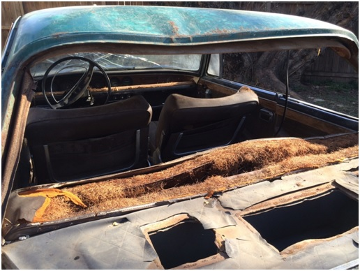
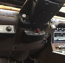

May - June 2018: Coolaire of Miami Primative 1960s Air Conditioning
click images to enlarge
Cumbersome Air Conditioning Conversions for European Cars in the 1960s
In these early summer months of 2018, as I toil away on removing surface body rust and doing body work in preparation for the first primer phase, I spend my quiet time learning more about the mysterious air conditioning system. As noted earlier (January 2017: Dash Removal), I discovered in this 1966 BMW 2000c a little control box under the dash labeled “Coolaire of Miami”. Obviously an AC unit. With a little research I discovered that the Coolaire Company of Miami once was a leading choice for after-market air conditioning for luxury imports arranged by US importers and dealers in the mid-1960s. Air conditioning was extremely rare on European cars in the early to mid-60s. Importers and American dealers including BMW’s Hoffman didn't really start doing their own conversions until 1969. These systems seemed most prevalent with British imports of the era, mostly led by Jaguar.
The whole thing is intriguing. So, I’ve got the control unit with its "Hi-way" and "City" settings, but as I inspect the car I see no condenser, evaporator or compressor. My mind keeps looking for telltale signs of the atypical 1970s era style of installation, namely the condenser/fan and control unit shoved into the center console area, but this earlier system definitely is not installed like that. This was an Arizona car that saw its somewhat tragic, waning years in the industrial northern Great Lakes region and I can only assume all of the components were removed over time probably due to failure. I have some of the original paperwork noting the car’s purchase in Mesa, Arizona along with a little Coolaire “Operating and Maintenance Instructions” complete with a little tassel bit of garnish.
click on images to enlarge
 |
 |
There are big sections cut out of the rear hat deck metal (underneath the greenhouse rear window) now oddly vacant. I'm wondering if the cooling unit was placed back there. It’s a “hack job” beyond the scope of installing rear audio speakers. The shape of the cutouts don’t correspond to any audio speaker I am familiar with.

I feel almost like an auto archeologist of sorts. Decaying vintage cars, overgrown landscapes, and even the ruins of old buildings; I’ve always been intrigued by deciphering the puzzle of what was and re-constructing an image of a better time. Maybe on some spiritual level I seek to celebrate the forgotten individuals who created and celebrated something once profound. I sense that this Coolaire system is something most of us have never seen before. Based on modern standards or even those of the 1970s; this promises to be some type of primitive, weird, cumbersome and now esoteric early iteration of auto air conditioning.
Limited Information on 1960s European Car Air Conditioning
There is not a whole lot of information out there. I found the initial information about Coolaire of Miami on some blog, but no details. After some more exhaustive searches, I found the Jaguar Air Conditioning Judges’ Guide For 1955-1971 Factory Approved or Factory Installed Units. Eureka! It explains everything. This thorough guide states up front that “very little seems to have been written about early air conditioning based on three facts and a conjecture. First, most secondary works rely access to factory documents, which are scarce and vague. Second, air conditioning was a North American desire and effort [mostly in the Deep South and desert states]. Third, the literature and documents that cover these efforts are rare and seldom available to the public. Perhaps the last reason is that air conditioning is seen as only an optional accessory, so why bother.”
A Very Large Expensive Option
The Jag Guide states that “these early air conditioning systems were a very large option and affected almost every other system on the car, be it electrical, engine, cooling, or even the body itself.”
A 1965 price list and warranty policy states that “for a new [European car] equipped with air conditioning, the system is priced to the dealer at $535 with a suggested retail of $650.” This equates to roughly $4,800.00 today based on standard inflation (2018).
The sticker price of a new 1966 BMW 2000c/cs was roughly $4,500.00 which equates to roughly $35,000 today. This is somewhat misleading in that modern car prices are far outpacing standard inflation figures evidenced with BMW’s current flagship 6 series coupe coming in at $80,000. Regardless, the original owner of the car spent just over 1/5 of the value of the car on this air conditioning unit. I deduce that he was a relatively wealthy man with money to spare and an extreme desire to stay cool behind the wheel of his shiny new turf green BMW 2000c.
Auto Archeology: Control Panel
So let’s get down to a bit of auto archeology and decipher where some of these AC components may have been installed started with the obvious. The Guide offers a schematic explaining how the “dual control switch panel mounted under the fascia (dash)” functions. This is helpful to see where those little knobs marked "Hi-way" and "City" actually went. The 3 way settings for “temp” and “fan” including “off” setting connected to the compressor as well as an intriguing set up revealed towards the rear.
click on image to enlarge
 |
 |
{kind=link}
Cooling Vents in the Rear
Finally the mystery of those 3 gaping holes on the rear hat (parcel) deck is solved.

Again, we turn to the Jaguar Guide complete with explanatory diagrams and images. This is where air returns and cooling vents on the rear parcel/hat shelf were located. “These vents (cool air) were small plastic heads with adjustable vents that stood up 4-6 inches from the rear shelf or they were a set of ducts that followed the rear roofline up from the shelf and blew air over the rear seat to the front.” The guide also notes that “on the rear shelf, the temperature control would be found in a central location where a temperature-sensing probe would pass through the rear shelf into the evaporator coils. Later cars (MK X) would see a very long sensor that provided this function to the driver.”
Rolls Royce and Bentley used this system well into the 1960s, as did Jaguar. On these luxury sedans/saloons, “these ducts were often color coordinated, and if properly installed, covered with the same color fabric as the headliner.”
click on image to enlarge
 |
 |
Giant Evaporator Case in Trunk
This is the part I find somewhat “jaw dropping”. I did not anticipate discovering something like this installed in the 1966 BMW coupe. These early air conditioning systems relied on what can only be described as a massive, heavy evaporator box bolted into the trunk floor immediately beneath the ventilation systems installed into the rear hat deck. In all fairness, they were doing the best with what they knew at the time. The Jaguar Guide states that “in the boot (trunk), a rather large box (evaporator) painted semi-gloss black was nested against the rear bulkhead. There would be 2 ducts blowing cool air on either side of the box made of formed round duct hose, and a central duct, which was rectangular in shape and made of sewn material, which provided return air.”
click on image to enlarge
 |
 |
Condenser Unit
Moving to the front of the car, our auto archeology quest continues. The Jag Guide denotes “visible changes are the addition of a condenser in front of the radiator and an under-bumper secondary condenser. “
On the 66 BMW, this explains the odd horizontal rectangular cut out boarded by rubber sleeves below the two signature kidney grills. It is helpful to see the same set up on a Jaguar. I can only assume that the main unit was installed in front of the radiator somehow which would invariably challenge not so robust radiator cooling capability of BMWs of the period.
click on image to enlarge
 |
 |
Pressure and Condensation Hoses
I note on my 2000c, two nearly one inch diameter holes on the right side of the engine compartment as well as in the trunk floor. My trusty Jaguar Guide notes that “the engine bay would suffer the most as the brackets that held the compressor were prominent. The compressor sat on the exhaust side, forward and above the generator (and later, the power steering pump). Holes were [cut into] the inner fender to pass the lines to the condensers and to the rear. All other lines ran under the car and were unseen. The recommended location for the receiver dryer was in the left front wheel-well, but there are period photos of the dryer placed on the inner fender (engine bay side).

The compressor, like any car AC system is belt driven off the crankshaft pulley. This had to be vexing for the 2000c automatic. As much as I love the design of the 2000c/cs, I am more reticent about its performance. This car was a unique new approach by BMW. Remember that with the 2000c/cs model, BMW envisioned a luxury sports coupe but with an emphasis more on comfort and a smooth ride and less on tight handling and performance. The CS model with its 4 speed transmission and 135 hp engine balanced performance with comfort. Unfortunately, the concept more or less proved to be a dead end on the auto evolutionary tree personified no more clearly than when one reviews the stats for the automatic version 2000c with its 100 hp engine (pulling 3,000 pounds) combined with a 3-speed automatic transmission resulting in an anemic zero-60 acceleration time above 12 plus seconds. Now, add an AC compressor that the engineers at BMW never envisioned. I can only imagine what a “slug butt” of a car this 66 2000C must have been when the compressor was drawing power off the already somewhat sleepy engine. Alas Phoenix, Arizona summer-time highs reach 110 plus degrees. The new owner most likely accepted the trade off with grace, especially when surrounded by the Bauhaus grand design adorned with polished woods and chrome.
Pressure and Condensation Hoses
These were heavy and long hoses! The Jag Guide explains that “under the evaporator box the in and out pressure lines could be seen passing through the rear boot floor along with the condensation drain hoses on either side. The entire unit was exposed to the boot with no finishing panels.” On the BMW I also find remnants of plastic securing loops underneath the car attached to the floor pans along the passenger side rocker. So, for this 2000c there once were two nearly one inch diameter hoses running from the engine compartment all the way back underneath the length of the coupe to the trunk area very much like the image shown with this image of a mid-60s Mark II.
click on image to enlarge
 |
 |
This may also explain the serious rust issues in the trunk floor. If the condensation hoses leaked or were clogged, the water run off most likely sat on the trunk floor, and most likely made its way into the spare tire well.

Conclusion
All in all, these early 1960s European car post-factory air conditioning installs were pretty complicated systems. In their day, the were pretty advanced I guess. I hope this blog posting helps fill in a vacant area of automotive history just a little bit more. As for my 1966 BMW 2000c restoration, the last vestiges of the once robust Coolaire of Miami air conditioner that served the car’s first owner so well, will be removed. I should say the last areas will be filled in, namely welding in patch panels in the rear hat/parcel deck as well as welding up those hose ports in the engine compartment. The trunk floor will need to be replaced.